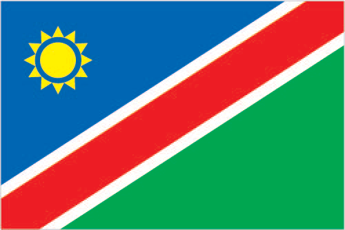
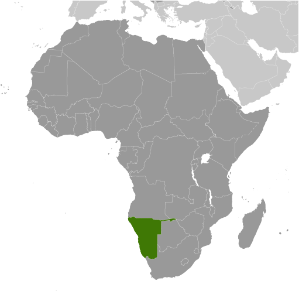
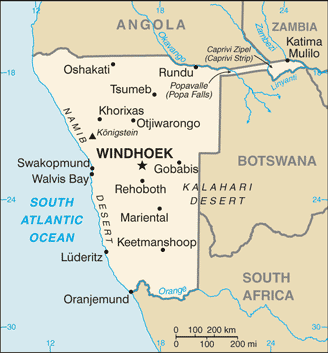

Africa :: NAMIBIA
Introduction :: NAMIBIA
-
South Africa occupied the German colony of South-West Africa during World War I and administered it as a mandate until after World War II, when it annexed the territory. In 1966, the Marxist South-West Africa People's Organization (SWAPO) guerrilla group launched a war of independence for the area that became Namibia, but it was not until 1988 that South Africa agreed to end its administration in accordance with a UN peace plan for the entire region. Namibia has been governed by SWAPO since the country won independence in 1990, though the party has dropped much of its Marxist ideology. Prime Minister Hage GEINGOB was elected president in 2014 in a landslide victory, replacing Hifikepunye POHAMBA who stepped down after serving two terms. SWAPO retained its parliamentary super majority in the 2014 elections and established a system of gender parity in parliamentary positions.
Geography :: NAMIBIA
-
Southern Africa, bordering the South Atlantic Ocean, between Angola and South Africa22 00 S, 17 00 EAfricatotal: 824,292 sq kmland: 823,290 sq kmwater: 1,002 sq kmcountry comparison to the world: 35slightly more than half the size of Alaskatotal: 4,220 kmborder countries (4): Angola 1,427 km, Botswana 1,544 km, South Africa 1,005 km, Zambia 244 km1,572 kmterritorial sea: 12 nmcontiguous zone: 24 nmexclusive economic zone: 200 nmdesert; hot, dry; rainfall sparse and erraticmostly high plateau; Namib Desert along coast; Kalahari Desert in eastmean elevation: 1,141 melevation extremes: lowest point: Atlantic Ocean 0 mhighest point: Konigstein on Brandberg 2,573 mdiamonds, copper, uranium, gold, silver, lead, tin, lithium, cadmium, tungsten, zinc, salt, hydropower, fishnote: suspected deposits of oil, coal, and iron oreagricultural land: 47.2%arable land 1%; permanent crops 0%; permanent pasture 46.2%forest: 8.8%other: 44% (2011 est.)80 sq km (2012)population density is very low, with the largest clustering found in the extreme north-central area along the border with Angolaprolonged periods of droughtlimited natural freshwater resources; desertification; wildlife poaching; land degradation has led to few conservation areasparty to: Antarctic-Marine Living Resources, Biodiversity, Climate Change, Climate Change-Kyoto Protocol, Desertification, Endangered Species, Hazardous Wastes, Law of the Sea, Ozone Layer Protection, Wetlandssigned, but not ratified: none of the selected agreementsfirst country in the world to incorporate the protection of the environment into its constitution; some 14% of the land is protected, including virtually the entire Namib Desert coastal strip
People and Society :: NAMIBIA
-
2,484,780note: estimates for this country explicitly take into account the effects of excess mortality due to AIDS; this can result in lower life expectancy, higher infant mortality, higher death rates, lower population growth rates, and changes in the distribution of population by age and sex than would otherwise be expected (July 2017 est.)country comparison to the world: 142noun: Namibian(s)adjective: Namibianblack 87.5%, white 6%, mixed 6.5%note: about 50% of the population belong to the Ovambo tribe and 9% to the Kavangos tribe; other indigenous ethnic groups include Herero 7%, Damara 7%, Nama 5%, Caprivian 4%, San 3%, Baster 2%, Tswana 0.5%Oshivambo languages 48.9%, Nama/Damara 11.3%, Afrikaans 10.4% (common language of most of the population and about 60% of the white population), Otjiherero languages 8.6%, Kavango languages 8.5%, Caprivi languages 4.8%, English (official) 3.4%, other African languages 2.3%, other 1.7%note: Namibia has 13 recognized national languages, including 10 indigenous African languages and 3 Indo-European languages (2011 est.)Christian 80% to 90% (at least 50% Lutheran), indigenous beliefs 10% to 20%Planning officials view Namibia’s reduced population growth rate as sustainable based on the country’s economic growth over the past decade. Prior to independence in 1990, Namibia’s relatively small population grew at about 3% annually, but declining fertility and the impact of HIV/AIDS slowed this growth to 1.4% by 2011, rebounding to close to 2% by 2016. Namibia’s fertility rate has fallen over the last two decades – from about 4.5 children per woman in 1996 to 3.4 in 2016 – due to increased contraceptive use, higher educational attainment among women, and greater female participation in the labor force. The average age at first birth has stayed fairly constant, but the age at first marriage continues to increase, indicating a rising incidence of premarital childbearing.The majority of Namibians are rural dwellers (about 55%) and live in the better-watered north and northeast parts of the country. Migration, historically male-dominated, generally flows from northern communal areas – non-agricultural lands where blacks were sequestered under the apartheid system – to agricultural, mining, and manufacturing centers in the center and south. After independence from South Africa, restrictions on internal movement eased, and rural-urban migration increased, bolstering urban growth.Some Namibians – usually persons who are better-educated, more affluent, and from urban areas – continue to legally migrate to South Africa temporarily to visit family and friends and, much less frequently, to pursue tertiary education or better economic opportunities. Namibians concentrated along the country’s other borders make unauthorized visits to Angola, Zambia, Zimbabwe, or Botswana, to visit family and to trade agricultural goods. Few Namibians express interest in permanently settling in other countries; they prefer the safety of their homeland, have a strong national identity, and enjoy a well-supplied retail sector. Although Namibia is receptive to foreign investment and cross-border trade, intolerance toward non-citizens is widespread.0-14 years: 36.97% (male 463,810/female 454,735)15-24 years: 20.35% (male 251,838/female 253,823)25-54 years: 34.37% (male 408,536/female 445,500)55-64 years: 4.35% (male 48,529/female 59,543)65 years and over: 3.96% (male 41,912/female 56,554) (2017 est.)total dependency ratio: 68.1youth dependency ratio: 62.2elderly dependency ratio: 5.8potential support ratio: 17.1 (2015 est.)total: 21.2 yearsmale: 20.4 yearsfemale: 21.9 years (2017 est.)country comparison to the world: 1831.95% (2017 est.)country comparison to the world: 4527.3 births/1,000 population (2017 est.)country comparison to the world: 467.9 deaths/1,000 population (2017 est.)country comparison to the world: 960 migrant(s)/1,000 population (2017 est.)country comparison to the world: 100population density is very low, with the largest clustering found in the extreme north-central area along the border with Angolaurban population: 48.6% of total population (2017)rate of urbanization: 3.63% annual rate of change (2015-20 est.)WINDHOEK (capital) 368,000 (2015)at birth: 1.03 male(s)/female0-14 years: 1.02 male(s)/female15-24 years: 0.99 male(s)/female25-54 years: 0.91 male(s)/female55-64 years: 0.82 male(s)/female65 years and over: 0.75 male(s)/femaletotal population: 0.96 male(s)/female (2016 est.)21.5 yearsnote: median age at first birth among women 25-29 (2013 est.)265 deaths/100,000 live births (2015 est.)country comparison to the world: 44total: 35.1 deaths/1,000 live birthsmale: 37.3 deaths/1,000 live birthsfemale: 32.8 deaths/1,000 live births (2017 est.)country comparison to the world: 55total population: 64 yearsmale: 62.4 yearsfemale: 65.6 years (2017 est.)country comparison to the world: 1893.29 children born/woman (2017 est.)country comparison to the world: 4756.1% (2013)8.9% of GDP (2014)country comparison to the world: 420.37 physicians/1,000 population (2007)2.7 beds/1,000 population (2009)improved:urban: 98.2% of populationrural: 84.6% of populationtotal: 91% of populationunimproved:urban: 1.8% of populationrural: 15.4% of populationtotal: 9% of population (2015 est.)improved:urban: 54.5% of populationrural: 16.8% of populationtotal: 34.4% of populationunimproved:urban: 45.5% of populationrural: 83.2% of populationtotal: 65.6% of population (2015 est.)13.8% (2016 est.)country comparison to the world: 5230,000 (2016 est.)country comparison to the world: 244,300 (2016 est.)country comparison to the world: 32degree of risk: highfood or waterborne diseases: bacterial diarrhea, hepatitis A, and typhoid fevervectorborne disease: malariawater contact disease: schistosomiasis (2016)17.2% (2016)country comparison to the world: 11913.2% (2013)country comparison to the world: 378.3% of GDP (2010)country comparison to the world: 9definition: age 15 and over can read and writetotal population: 81.9%male: 79.2%female: 84.5% (2015 est.)total: 56.2%male: 49.4%female: 62.2% (2013 est.)country comparison to the world: 19
Government :: NAMIBIA
-
conventional long form: Republic of Namibiaconventional short form: Namibialocal long form: Republic of Namibialocal short form: Namibiaformer: German South-West Africa (Deutsch Suedwest Afrika), South-West Africaetymology: named for the coastal Namib Desert; the name "namib" means "vast place" in the Nama/Damara languagepresidential republicname: Windhoekgeographic coordinates: 22 34 S, 17 05 Etime difference: UTC+1 (6 hours ahead of Washington, DC, during Standard Time)daylight saving time: +1hr, begins first Sunday in September; ends first Sunday in April14 regions; Erongo, Hardap, //Karas, Kavango East, Kavango West, Khomas, Kunene, Ohangwena, Omaheke, Omusati, Oshana, Oshikoto, Otjozondjupa, Zambezi; note - the Karas Region was renamed //Karas in September 2013 to include the alveolar lateral click of the Khoekhoegowab language21 March 1990 (from South African mandate)Independence Day, 21 March (1990)history: drafted 9 February 1990, signed 16 March 1990, entered into force 21 March 1990amendments: proposed by Parliament; passage requires two-thirds majority vote of the National Assembly membership and of the National Council of Parliament and assent by the president of the republic; if the National Council fails to pass an amendment, the president can call for a referendum; passage by referendum requires two-thirds majority of votes cast; amendments that detract from or repeal constitutional articles on fundamental rights and freedoms cannot be amended, and the requisite majorities needed by Parliament to amend the constitution cannot be changed; amended 1998, 2010, 2014 (2017)mixed legal system of uncodified civil law based on Roman-Dutch law and customary lawhas not submitted an ICJ jurisdiction declaration; accepts ICCt jurisdictioncitizenship by birth: nocitizenship by descent only: at least one parent must be a citizen of Namibiadual citizenship recognized: noresidency requirement for naturalization: 5 years18 years of age; universalchief of state: President Hage GEINGOB (since 21 March 2015); note - the president is both chief of state and head of governmenthead of government: President Hage GEINGOB (since 21 March 2015); Prime Minister Saara KUUGONGELWA-AMADHILA (since 21 March 2015)cabinet: Cabinet appointed by the president from among members of the National Assemblyelections/appointments: president elected by absolute majority popular vote in 2 rounds if needed for a 5-year term (eligible for a second term); election last held on 28 November 2014 (next to be held in November 2019)election results: Hage GEINGOB elected president; percent of vote - Hage GEINGOB (SWAPO) 86.7%, McHenry VENAANI (DTA) 5.0%, Hidipo HAMUTENYA (RDP) 3.4%, Asser MBAI (NUDO)1.9%, Henk MUDGE (RP) 1.0%, other 2.0%description: bicameral Parliament consists of the National Assembly (104 seats; 96 members directly elected in multi-seat constituencies by proportional representation vote to serve 5-year terms and 8 nonvoting members appointed by the president) and the National Council, which primarily reviews legislation passed and referred by the National Assembly (42 seats); members indirectly elected 3 each by the 14 regional councils to serve 5-year terms)elections: National Council - elections for regional councils to determine members of the National Council held on 27 November 2015 (next to be held in November 2020); National Assembly - last held on 28 November 2014 (next to be held in November 2019)election results: National Council - percent of vote by party - NA; seats by party - SWAPO 40, NUDO 1, DTA 1; National Assembly - percent of vote by party - SWAPO 80.0%, DTA 4.8%, RDP 3.5%, APP 2.3%, UDF 2.1%, NUDO 2.0%, CPN 1.5%, other 3.8%; seats by party - SWAPO 77, DTA 5, RDP 3, APP 2, UDF 2, NUDO 2, CPN 2, SWANU 1, UPM 1, RP 1highest court(s): Supreme Court (consists of the chief justice and at least 3 judges in quorum sessions)judge selection and term of office: judges appointed by the president of Namibia upon the recommendation of the Judicial Service Commission; judges serve until age 65 but terms can be extended by the president until age 70subordinate courts: High Court; Labor Court; regional and district magistrates' courts; community courtsAll People's Party or APP [Ignatius SHIXWAMENI]Communist Party of Namibia or CPN (formerly known as Workers' Revolutionary Party or WRP) [Attie BEUKES and Harry BOESAK]Democratic Turnhalle Alliance of Namibia or DTA [McHenry VENAANI]National Unity Democratic Organization or NUDO [Asser MBAI]Rally for Democracy and Progress or RDP [Jeremiah NAMBINGA]Republican Party or RP [Henk MUDGE]South West Africa National Union or SWANU [Usutuaije MAAMBERUA]South West Africa People's Organization or SWAPO [Hage GEINGOB, acting president]United Democratic Front or UDF [Apius AUCHAB]United People's Movement or UPM [Jan J. VAN WYK]National Society for Human Rights or NAMRIGHTSother: labor unionsACP, AfDB, AU, C, CD, CPLP (associate observer), FAO, G-77, IAEA, IBRD, ICAO, ICCt, ICRM, IDA, IFAD, IFC, IFRCS, ILO, IMF, IMO, Interpol, IOC, IOM, IPU, ISO, ITSO, ITU, ITUC (NGOs), MIGA, NAM, OPCW, SACU, SADC, UN, UNAMID, UNCTAD, UNESCO, UNHCR, UNIDO, UNISFA, UNMIL, UNMISS, UNOCI, UNWTO, UPU, WCO, WHO, WIPO, WMO, WTOchief of mission: Ambassador Martin ANDJABA (since 16 September 2010)chancery: 1605 New Hampshire Avenue NW, Washington, DC 20009telephone: [1] (202) 986-0540FAX: [1] (202) 986-0443chief of mission: Ambassador Thomas Frederick DAUGHTON (since 26 November 2014)embassy: 14 Lossen Street, Windhoekmailing address: Private Bag 12029 Ausspannplatz, Windhoektelephone: [264] (61) 295-8500FAX: [264] (61) 295-8603a wide red stripe edged by narrow white stripes divides the flag diagonally from lower hoist corner to upper fly corner; the upper hoist-side triangle is blue and charged with a golden-yellow, 12-rayed sunburst; the lower fly-side triangle is green; red signifies the heroism of the people and their determination to build a future of equal opportunity for all; white stands for peace, unity, tranquility, and harmony; blue represents the Namibian sky and the Atlantic Ocean, the country's precious water resources and rain; the golden-yellow sun denotes power and existence; green symbolizes vegetation and agricultural resourcesoryx (antelope); national colors: blue, red, green, white, yellowname: "Namibia, Land of the Brave"lyrics/music: Axali DOESEBnote: adopted 1991
Economy :: NAMIBIA
-
Namibia’s economy is heavily dependent on the extraction and processing of minerals for export. Mining accounts for 11.5% of GDP, but provides more than 50% of foreign exchange earnings. Rich alluvial diamond deposits make Namibia a primary source for gem-quality diamonds. Marine diamond mining is increasingly important as the terrestrial diamond supply has dwindled. The rising cost of mining diamonds, especially from the sea, combined with increased diamond production in Russia and China, has reduced profit margins. Namibian authorities have emphasized the need to add value to raw materials, do more in-country manufacturing, and exploit the services market, especially in the logistics and transportation sectors.Namibia is the world's fifth-largest producer of uranium. The Chinese-owned Husab uranium mine is expected to start producing uranium ore in 2017. Once the Husab mine reaches full production, Namibia is expected to become the world’s second-largest producer of uranium. Namibia also produces large quantities of zinc and is a smaller producer of gold and copper. Namibia's economy remains vulnerable to world commodity price fluctuations and drought.Namibia normally imports about 50% of its cereal requirements; in drought years, food shortages are problematic in rural areas. A high per capita GDP, relative to the region, obscures one of the world's most unequal income distributions. A priority of the current government is poverty eradication. Despite a drought, real GDP growth remained strong in 2015 around 5.3% because of construction in the mining and housing sectors coupled with expansionary fiscal policy. GDP growth in 2016 slowed to 1%, however, due to contractions in both the construction and mining sectors, as well as the ongoing drought. Growth is expected to recover modestly in 2017 and 2018.A five-year Millennium Challenge Corporation compact ended in September 2014. As an upper middle income country, Namibia is ineligible for a second compact. The Namibian economy is closely linked to South Africa with the Namibian dollar pegged one-to-one to the South African rand. Namibia receives 30%-40% of its revenues from the Southern African Customs Union (SACU); volatility in the size of Namibia's annual SACU allotment and global mineral prices complicates budget planning.$26.35 billion (2016 est.)$25.74 billion (2015 est.)$24.02 billion (2014 est.)note: data are in 2016 dollarscountry comparison to the world: 136$10.95 billion (2016 est.)1.1% (2016 est.)6% (2015 est.)6.4% (2014 est.)country comparison to the world: 189$11,300 (2016 est.)$11,400 (2015 est.)$11,000 (2014 est.)note: data are in 2016 dollarscountry comparison to the world: 13411.6% of GDP (2016 est.)20.9% of GDP (2015 est.)24.1% of GDP (2014 est.)country comparison to the world: 151household consumption: 73.3%government consumption: 25.1%investment in fixed capital: 24.1%investment in inventories: 1.5%exports of goods and services: 42.7%imports of goods and services: -66.7% (2016 est.)agriculture: 6.2%industry: 25.9%services: 67.9% (2016 est.)millet, sorghum, peanuts, grapes; livestock; fishmeatpacking, fish processing, dairy products, pasta, beverages; mining (diamonds, lead, zinc, tin, silver, tungsten, uranium, copper)-9% (2016 est.)country comparison to the world: 198939,600 (2016 est.)country comparison to the world: 147agriculture: 31%industry: 14%services: 54%note: about half of Namibia's people are unemployed while about two-thirds live in rural areas; roughly two-thirds of rural dwellers rely on subsistence agriculture (2013 est.)28.1% (2014 est.)29.6% (2013 est.)country comparison to the world: 20028.7% (2010 est.)lowest 10%: 2.4%highest 10%: 42% (2010)59.7 (2010)70.7 (2003)country comparison to the world: 7revenues: $3.502 billionexpenditures: $4.197 billion (2016 est.)32.9% of GDP (2016 est.)country comparison to the world: 64-6.5% of GDP (2016 est.)country comparison to the world: 17740.7% of GDP (2016 est.)39.9% of GDP (2015 est.)country comparison to the world: 1321 April - 31 March6.7% (2016 est.)3.4% (2015 est.)country comparison to the world: 1867% (12 April 2017)6.5% (31 December 2015)country comparison to the world: 479.87% (31 December 2016 est.)9.32% (31 December 2015 est.)country comparison to the world: 82$2.898 billion (31 December 2016 est.)$2.582 billion (31 December 2015 est.)country comparison to the world: 117$6.281 billion (31 December 2016 est.)$5.271 billion (31 December 2015 est.)country comparison to the world: 120$7.006 billion (31 December 2016 est.)$5.36 billion (31 December 2015 est.)country comparison to the world: 118$1.305 billion (31 December 2012 est.)$1.152 billion (31 December 2011 est.)$1.176 billion (31 December 2010 est.)country comparison to the world: 104$-1.529 billion (2016 est.)$-1.7 billion (2015 est.)country comparison to the world: 145$4.003 billion (2016 est.)$4.015 billion (2015 est.)country comparison to the world: 113diamonds, copper, gold, zinc, lead, uranium; cattle, white fish and mollusksSwitzerland 20%, South Africa 17.1%, Botswana 15%, Zambia 6.7%, Spain 4.6%, Italy 4.2% (2016)$6.441 billion (2016 est.)$6.914 billion (2015 est.)country comparison to the world: 111foodstuffs; petroleum products and fuel, machinery and equipment, chemicalsSouth Africa 57.1%, Botswana 6.8%, Zambia 4.1% (2016)$1.834 billion (31 December 2016 est.)$1.688 billion (31 December 2015 est.)country comparison to the world: 120$6.904 billion (31 December 2016 est.)$6.155 billion (31 December 2015 est.)country comparison to the world: 124$NA$NANamibian dollars (NAD) per US dollar -14.7096 (2016 est.)14.7096 (2015 est.)12.7589 (2014 est.)10.8526 (2013 est.)8.2 (2012 est.)
Energy :: NAMIBIA
-
population without electricity: 1,600,000electrification - total population: 32%electrification - urban areas: 50%electrification - rural areas: 17% (2013)1.519 billion kWh (2015 est.)country comparison to the world: 1453.771 billion kWh (2015 est.)country comparison to the world: 12888 million kWh (2015 est.)country comparison to the world: 812.623 billion kWh (2015 est.)country comparison to the world: 51514,200 kW (2015 est.)country comparison to the world: 14630.1% of total installed capacity (2015 est.)country comparison to the world: 1850% of total installed capacity (2015 est.)country comparison to the world: 20864.6% of total installed capacity (2015 est.)country comparison to the world: 235.9% of total installed capacity (2015 est.)country comparison to the world: 880 bbl/day (2016 est.)country comparison to the world: 2110 bbl/day (2014 est.)country comparison to the world: 2100 bbl/day (2014 est.)country comparison to the world: 2100 bbl (1 January 2017 es)country comparison to the world: 2110 bbl/day (2014 est.)country comparison to the world: 21225,000 bbl/day (2015 est.)country comparison to the world: 12979.56 bbl/day (2014 est.)country comparison to the world: 12324,700 bbl/day (2014 est.)country comparison to the world: 1080 cu m (2013 est.)country comparison to the world: 2110 cu m (2013 est.)country comparison to the world: 1460 cu m (2013 est.)country comparison to the world: 2090 cu m (2013 est.)country comparison to the world: 20862.29 billion cu m (1 January 2017 es)country comparison to the world: 624 million Mt (2013 est.)country comparison to the world: 133
Communications :: NAMIBIA
-
total subscriptions: 187,812subscriptions per 100 inhabitants: 8 (July 2016 est.)country comparison to the world: 128total: 2,659,951subscriptions per 100 inhabitants: 109 (July 2016 est.)country comparison to the world: 143general assessment: good system; core fiber-optic network links most centers with digital connectionsdomestic: multiple mobile-cellular providers with a combined subscribership of about 110 telephones per 100 personsinternational: country code - 264; fiber-optic cable to South Africa, microwave radio relay link to Botswana, direct links to other neighboring countries; connected to the South African Far East submarine cable through South Africa; connected to the West Africa Cable System, an ultra-high capacity fiber-optic submarine cable linking southern and western African countries to Europe; satellite earth stations - 4 Intelsat (2016)1 private and 1 state-run TV station; satellite and cable TV service available; state-run radio service broadcasts in multiple languages; about a dozen private radio stations; transmissions of multiple international broadcasters available (2007).natotal: 756,118percent of population: 31.0% (July 2016 est.)country comparison to the world: 140
Transportation :: NAMIBIA
-
number of registered air carriers: 2inventory of registered aircraft operated by air carriers: 12annual passenger traffic on registered air carriers: 553,322annual freight traffic on registered air carriers: 30,302,405 mt-km (2015)V5 (2016)112 (2013)country comparison to the world: 52total: 19over 3,047 m: 42,438 to 3,047 m: 21,524 to 2,437 m: 12914 to 1,523 m: 1 (2017)total: 931,524 to 2,437 m: 25914 to 1,523 m: 52under 914 m: 16 (2013)total: 2,628 kmnarrow gauge: 2,628 km 1.067-m gauge (2014)country comparison to the world: 63total: 44,138 kmpaved: 6,387 kmunpaved: 37,751 km (2010)country comparison to the world: 83total: 1by type: cargo 1 (2010)country comparison to the world: 154major seaport(s): Luderitz, Walvis Bay
Military and Security :: NAMIBIA
-
4.44% of GDP (2016)4.7% of GDP (2015)4.18% of GDP (2014)3.07% of GDP (2013)3.17% of GDP (2012)country comparison to the world: 20Namibian Defense Force (NDF): Army, Navy, Air Force (2013)18 years of age for voluntary military service; no conscription (2012)
Transnational Issues :: NAMIBIA
-
concerns from international experts and local populations over the Okavango Delta ecology in Botswana and human displacement scuttled Namibian plans to construct a hydroelectric dam on Popa Falls along the Angola-Namibia border; the governments of South Africa and Namibia have not signed or ratified the text of the 1994 Surveyor's General agreement placing the boundary in the middle of the Orange River; Namibia has supported, and in 2004 Zimbabwe dropped objections to, plans between Botswana and Zambia to build a bridge over the Zambezi River, thereby de facto recognizing a short, but not clearly delimited, Botswana-Zambia boundary in the rivercurrent situation: Namibia is a country of origin and destination for children and, to a lesser extent, women subjected to forced labor and sex trafficking; victims, lured by promises of legitimate jobs, are forced to work in urban centers and on commercial farms; traffickers exploit Namibian children, as well as children from Angola, Zambia, and Zimbabwe, for forced labor in agriculture, cattle herding, domestic service, fishing, and street vending; children are also forced into prostitution, often catering to tourists from southern Africa and Europe; San and Zemba children are particularly vulnerable; foreign adults and Namibian adults and children are reportedly subjected to forced labor in Chinese-owned retail, construction, and fishing operationstier rating: Tier 2 Watch List – Namibia does not fully comply with the minimum standards for the elimination of trafficking; however, it is making significant efforts to do so; Namibia was granted a waiver from an otherwise required downgrade to Tier 3 because its government has a written plan that, if implemented would constitute making significant efforts to bring itself into compliance with the minimum standards for the elimination of trafficking; in 2015, the Child Care and Protection Bill passed, criminalizing child trafficking; the government’s first sex trafficking prosecution remained pending; no new prosecutions were initiated and no trafficking offenders have ever been convicted; accusations of forced labor at Chinese construction and mining companies continue to go uninvestigated; authorities failed to fully implement victim identification and referral processes, which led to the deportation of possible victims (2015)